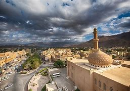

نزوى اسم مشتق من الفعل انزوى
وذلك لأنّها تقع على مفترق طرق بين كلّ من مسقط
وسلسلة جبال الحجر،
والأجزاء الشماليّة من عُمان، وسمّيت أيضاً "ببيضة الإسلام"
وذلك بسبب نشاطها الفكري، كما تخرج منها أجيال كثيرة من الفقهاء من أمثال صاحب المصنف، وصاحب كتاب بيان الشرع
كما أنّها خرّجت الكثير من العلماء، والمؤرخين، وقد اشتهرت بكونها عاصمة دينية، وروحية، وفقهية
بحيث كان لها دور كبير في الدعوة للإسلام، والجهاد في سبيله، وقد كانت في السابق العاصمة السياسية لسلطنة عُمان، وقد أطلق عليها سلطان عُمان قابوس بن سعيد اسم مدينة العلم والتراث،
وذلك لكونها مركزاً للعلم، والحضارة
ومستودعاً للتراث الإنساني
حيث إنّ جامعتها تحتوي على 6000 مخطوطة.
©جميع المحفوظات لدى الطالبه خوله خليفه خميس الهاشميه تحت اشراف الاستاذه سليمه الهاشميه